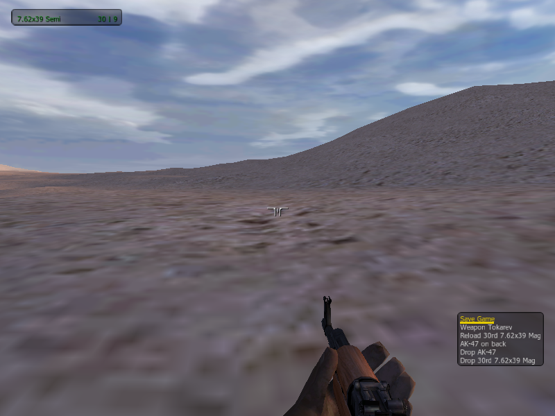
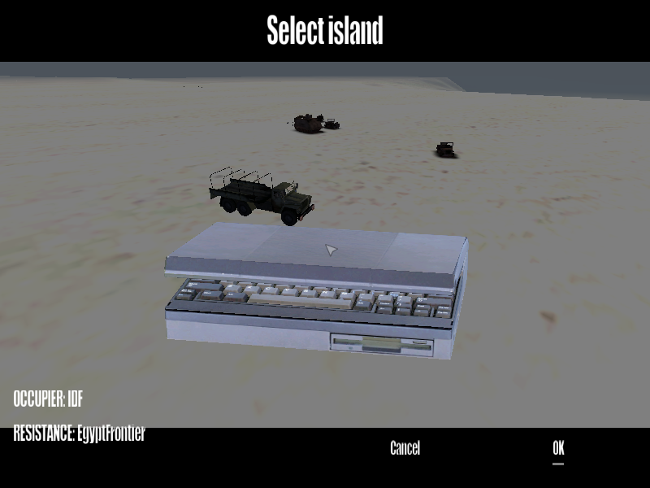

Gameplay Systems: The AI Overhaul & Guerrilla Mode
This is the part that actually matters when you're playing: enemies that fight like a real squad instead
of a shooting gallery, and Guerrilla Mode, a brand-new persistent open-world insurgency with swappable
islands and factions chosen at new-game, run by an occupier that fights like a whole state, not just a garrison.
Some of this is already built and wired into the engine; some is designed and waiting to be built. Every
system below carries a badge that says which, and we never round up.
★ The AI Overhaul: What's Changing
The whole point is to make firefights feel like a fight instead of a shooting range. Here's what that
means in practice:
| System | What changes for you | Status |
|---|
| Squad Formations | New combat-spread, herringbone and diamond formations, and existing ones retuned so squads actually look organized. | Planned |
| Dynamic Morale | Courage isn't a fixed stat anymore: it craters when a leader goes down, drops with every casualty, and rallies near friendlies. Break a squad's morale and watch it actually break. | Planned |
| Flee-to-Cover | Routed enemies actually run to real cover instead of sprinting blindly back to where they spawned. | Planned |
| Target Priority | Squads focus-fire the leader, the machine-gunner, and whoever's closest or already wounded, not whoever happens to be in their cone of vision. | Planned |
| Suppression | Rounds cracking past force enemies prone and into cover. Real fire-and-maneuver instead of two lines trading shots in the open. The flagship of the overhaul. | Planned |
| Memory Decay | Lose contact and the enemy's memory of where you were actually fades, from minutes to instantly, depending on the fight. | Planned |
| Stance & Concealment | Go prone in cover and you become genuinely hard to spot at range, not just cosmetically crouched. | Planned |
| Shared Enemy Intel | Spot one enemy and nearby friendly squads react to the radio call before they even have line of sight on you. | Planned |
| Bullet Penetration | Rounds punch through hedgerows, wood, and thin metal at reduced damage. Cover that looks safe often isn't. | Planned |
Curious about the build order? See the Roadmap.
Guerrilla Mode: The Flagship Game Mode
A persistent single-player insurgency: grow a guerrilla cell into the army that liberates an occupied island.
You are one Resistance fighter ambushing patrols, looting gear, recruiting and training fighters,
and capturing towns from an occupying faction that escalates as you do.
Two loops keep it moving: a tactical loop on the ground (Scout → Approach → Strike →
Loot → Fade) for every engagement, and a strategic loop above it (territory → faction growth
→ enemy escalation) that turns each win into a bigger fight next time.
| System | What it does | Status |
|---|
| Zones & Capture | Camp / Village / Outpost, created at runtime, with capture triggers. Now a native engine system (ZoneRegistry). | Built |
| Garrisons & QRF | Enemy forces spawn to defend held zones and convoy in to respond to alarms; officer-first, distance-cached so off-screen troops cost nothing. | Built |
| Graduated Alert | GREEN/YELLOW/RED state machine: getting spotted is a recoverable setback you can de-escalate from before it costs you the mission. | Built |
| Two Economies | Resources (₽) and Manpower (HR) earned from held territory, spent on training, gear and recruits. | Built |
| Recruiting & Companions | Grow your band; a small roster of named, permadeath companions level up, gaining rank and skill you can watch improve mid-campaign. | Built |
| Loot & Gear Unlocks | Looted weapons tally toward permanent, faction-wide unlocks. | Built |
| War Level & Heat | A slow, map-wide escalation that produces tougher enemy spawns, plus a fast, per-region alertness that decays if you lie low. | Built |
| Save / Load | Persistence across sessions via the engine's own saveGame state, keeping territory, veterans, unlocks and all. | Built |
Status: the whole "Three Zones" slice is built and now runs as native engine systems, not just mission scripts, and it already boots on a second island with the factions swapped (see below). What hasn't happened yet is the first
real playtest, fighting the Outpost garrison for real, watching the world respond, and reloading a
save. See the Roadmap for what's next.

DEV CAPTUREOn the ground: a lone resistance fighter with a looted AK-47 and the field action menu open: the Scout→Strike→Loot→Fade loop, running. Early build on the Sinai test bed.
Swappable Factions & Islands: the New-Game Flow
Every new campaign starts the same way: pick your island, then pick who's fighting on it, the civilians, the resistance, and the occupier. Want NATO holding Nogova instead of the USSR sitting on
Everon? That's a different campaign, not a different mod. Unit rosters, vehicles, disguise gear, and
loot unlocks all travel with whichever faction you pick, so the fight actually feels different depending on
who you chose.
Full CWA data covers four islands (Everon, Malden, Kolgujev, Nogova) and every faction in the
game. The swap system is built and running: every island fact and every faction fact lives in swappable data, and the
same campaign core already boots on a second island (Sinai) with the sides flipped. There, a modern occupier is held off by an Egyptian frontier resistance, the mirror image of the stock Cold War matchup, and the campaign code didn't change a line to do it. See the Roadmap
for what's proven and what comes next.

DEV CAPTUREThe new-game screen, running: choose the island, then cycle the occupier and resistance factions before you deploy. Here the occupier is IDF and the resistance is the Egyptian Frontier Corps, a matchup that doesn't exist in the stock game.
The Occupier's Playbook: You're Fighting a State, Not Just a Squad Planned
Most games escalate one way: more, bigger enemies. Real occupations barely worked like that. They ran an
administrative machine (checkpoints, curfews, reprisals, informers, resettlement) whose
weapons were aimed at the population as much as at the guerrilla's rifle. Guerrilla Mode's occupier gets that
whole playbook, drawn from real counterinsurgency history and built entirely from systems the engine already has
(spawned objects, waypoints, timers, radio text, no new animations). The result: the world reads as
occupied territory before a shot is fired, and the occupier's escalation targets your
economy and the towns that feed you, as much as your squad.
This whole layer is on the drawing board: designed and documented, still to be built, and it's the depth that turns the
"Three Zones" proof-of-concept into a war. A few pieces (flags on captured zones, a curfew clock, a hand-placed
checkpoint) land early; the rest arrives as the mode fills out.
| Occupier system | What it means for you | Status |
|---|
| Checkpoints, Wire & Flags | The occupier stamps a control grid onto the island: roadblocks at the chokepoints, watchtowers and wire around towns, its flag over everything it holds. The map itself gets tighter to move through as the war escalates; veterans read a region by its infrastructure. Tearing the flag down can be the moment a zone flips to you. | Planned |
| Curfew & Pass Laws | Occupation runs on a clock, too. After dark in a controlled town, a civilian on the street is suspicious by default. Night stops being free stealth and becomes a gamble: darkness and empty streets, but your presence is its own probable cause. | Planned |
| Reprisals & Closures | Blow an ambush and the nearest town that helped you pays: its income shut off, a house or two demolished into rubble. But history's hard lesson is wired in: repression radicalizes. Every crackdown costs you support now and hands you fresh recruits later, so the occupier's cruelest moves seed your comeback. | Planned |
| Protected Villages | Push a region too hard and the occupier empties a town into a fenced resettlement camp, leaving a ghost town behind. That camp is a ready-made rescue op: break the wire, walk the people home, the town reopens for you. | Planned |
| Fireforce | From the war's real signature tactic: on a full alarm the reaction force arrives by helicopter, unloading behind and beside you to cut off the retreat. It flips the difficulty exactly the way it did in history: the ambush is easy; getting out before the choppers land is the skill. | Planned |
| Pseudo-Gangs | Late in the war, some "resistance" patrols are the enemy in your clothes: occupier teams wearing the resistance's uniform, whose kills near towns get blamed on you. Your counter is a radio challenge: real fighters give the day's countersign; the fakes answer wrong or open fire. Paranoia, exactly when you'd started to feel safe among your own. | Planned |
| Tracker Teams | Break contact and a dedicated team picks up your actual trail and follows it, pausing to read the ground. Escape becomes procedural: lose them in a crowded friendly town, cross water, take a vehicle, or turn and ambush the trackers, the classic gamble. | Planned |
| Detention & Rescue | A companion who goes down near the enemy might be taken alive instead of killed, their name moved to a cell at the regional prison, on a clock toward something worse. Permadeath keeps its teeth, but the cruelest losses get an appeal: raid the compound and walk your veteran out. | Planned |
| Informers | Hostile towns leak. In a low-support town a civilian or two are informers. Let one watch you do something incriminating and a report goes up without any soldier ever seeing you. Supportive towns become safe houses; hostile ones become minefields of eyes. You can find the informer, then turn, scare, or silence them: the insurgency's dirtiest recurring choice. | Planned |
THE HOOK
Here's the feeling we're building toward: you flip the Outpost, the war level ticks up, and the occupier answers on the map. The village that fed you goes under closure, a fresh checkpoint
appears on your way out, and the next patrol comes in by helicopter. You feel the world tighten around
your victory in the same fifteen minutes you won it. Act and it clamps down; sit still and it expands
anyway. There's no quiet corner to grind in, and that's the point.
How Enemies See & Target You
Every enemy keeps a running read on you: how visible you currently are, how sure they are of your
position, how dangerous you look, and how worth-it you are to shoot compared to your squadmates. That
last one is what the target-priority overhaul reshapes, so officers and gunners die first instead of
whoever's standing in the middle.
Aiming already leads a moving target and accounts for bullet drop over distance; accuracy gets sloppier
the farther out and depends on the weapon. Friendly fire is checked too, so squads can fight shoulder to
shoulder without constantly shooting each other. This is the machinery suppression and bullet-penetration
hook into: near-misses that make you flinch, and cover that doesn't always stop the round.
Smart Movement
Enemies don't just walk in straight lines: they path along roads when it makes sense and cut cross-country
when it doesn't, and vehicles know a ridge a soldier can climb is one they can't. Watching is efficient too. The engine spends its attention on threats actually in a fight, not idle bystanders three grid squares
away, which is what keeps the AI overhaul from tanking your framerate.
The World Itself
Background context: the engine we inherited already does a lot on its own before the overhaul
touches anything. See Under the Hood for the full technical writeup.
Vehicles & Crew
Vehicles add path-following, predictive obstacle avoidance, leader-follow convoy formations, and staged
braking on top of the shared body. Support vehicles run a real supply model for transferring cargo, fuel and
ammo. This is the backbone of rearming and repair.
World & Terrain
Real islands, not a flat backdrop: proper distance rendering out to the horizon, roads that vehicles
actually navigate, and layered sightlines so what you can see is what the enemy can see too.
Weather & Sky
Overcast, rain and thunderstorms actively roll in and shrink how far you can see and shoot. Day and night
run off a real sun/moon cycle, complete with moon phases and a rotating star field. Night ops in this
game are actually dark.
CAVEAT
Everything above is active development, not a finished product.
Features, timelines and details can and will change before they ship.
» Next: What's Coming
|